构建Lua解释器Part11：Upvalue
前言
本章，我将深入探讨lua的upvalue机制。在写这篇博客之前，我已经自己动手实现了这个机制，并且将其提交到了github仓库dummylua上了。为了专注于upvalue机制本身的讨论，本章不会展示大量的代码细节，尽量在抽象层面来论述。
什么是Upvalue？
upvalue是让lua来模拟实现，类似c语言中，静态变量机制的一种机制。一个带上upvalue的函数，我们称之为闭包(closure)。一个c函数，带上upvalue的结构，我们称之为c闭包。而一个lua函数，带上upvalue，我们称之为lua闭包。我们可以看一下官方对于upvalue相关内容的阐述[1]。
While the registry implements global values, the upvalue mechanism implements an equivalent of C static variables, which are visible only inside a particular function. Every time you create a new C function in Lua, you can associate with it any number of upvalues; each upvalue can hold a single Lua value. Later, when the function is called, it has free access to any of its upvalues, using pseudo-indices.
We call this association of a C function with its upvalues a closure. Remember that, in Lua code, a closure is a function that uses local variables from an outer function. A C closure is a C approximation to a Lua closure. One interesting fact about closures is that you can create different closures using the same function code, but with different upvalues.
简单的文字，并不能给我们具象化的展示，这里通过几个例子，来直观感受一下，什么是upvalue：
1 | local upval = 1 |
在上面这个例子中，test函数的外层，一共有两个变量，upval和upval2。test函数内，有一行打印upval的代码，因为有这个操作，test函数需要引用到外层函数的upval这个变量，因此upval是test函数的一个upvavle。而上面这个例子，在test函数内，又定义了一个aaa函数，在aaa函数内，因为使用了upval、upval2和locvar几个变量，因此aaa函数的upvalue有upval、upval2和locvar。由于aaa是test的内层定义的函数，test是aaa的外层函数，因此test函数的upvalue也包括了，upval、upval2。现在，只是给大家一个直观的概念，其实很多读者对此已经耳熟能详了，在后面的章节内容中，我会更细致地论述这个机制的原理。
Lua函数探索
要彻底搞明白upvalue的概念，首先，我们要捋清楚lua函数的概念，前面也提到过，带upvalue的函数就是closure（实际上每个lua函数都至少包含一个upvalue）。从类型上来看，lua一共有3种函数，分别是light c function、c closure和lua closure。关于第一种，light c function的概念，操作和调用流程，在第一章有着非常详细的阐述。至于第二种c closure，它有自己独立的数据结构，包含一个函数指针，以及一个upvalue列表，c closure实例受gc管控，c closure的创建流程，和运行流程，可以luabase.c文件里的luaB_openbase函数，以及第5章调用函数的流程里找到。现在，我将集中篇幅，来探讨lua closure。
Chunk的概念
在开始讨论lua函数之前，我们不妨来复习一下chunk的概念，实际上在第五章，我已经论述过chunk的概念，这里为了内容完整性，我决定重新再论述一次。chunk是什么？在《Programming In Lua》里的解释是[2]：
Each piece of code that Lua executes, such as a file or a single line in interactive mode, is a chunk. More specifically, a chunk is simply a sequence of statements.
chunk本质是一个文件里的所有代码，或是交互模式下的一个字符串，其实质就是statement流的集合。
Lua的函数层次
现在，我要来论述一下Lua的函数层次了。前面已经探讨了chunk的概念，那么什么是lua的函数层次，它和chunk又有什么关系呢？现在假设，我们有个脚本test.lua，代码如下所示：
1 | 1 -- test.lua |
chunk是什么？chunk就是test.lua文件内的所有代码(第1~第6行)，它和函数层次有什么关系呢？实际上，一个chunk（上面例子中的第1~第6行代码）实际上就是一个lua函数，只是它没有函数名，不需要通过function关键字来修饰，这个chunk所代表的函数，被称之为top-level function，也是level 1函数。而xxx函数是在top-level function里定义的，因此它是level 2函数(top-level function是level1)，如果函数xxx内，如果还有定义其他函数，那么这个函数的level就是3，以此类推。实际上，level的级别，代表了函数定义嵌套的层次。最关键的还是top-level function和chunk的关系。函数的层次关系，对于后续理解upvalue机制，非常重要。
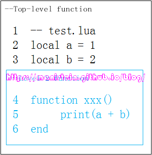
图1图1展示了上面例子中，函数的层次关系。除去top-level function，其他层次的函数，在定义上实际上可以有多重表示含义，比如我们的xxx函数的定义，其实质可以替换为如下所示的形式：
1 | xxx = function() |
因为在lua中，function是first-class类型，因此函数本身就是一种变量类型，因此这样的语法是成立且合理的。
Lua Closure的数据结构
我在第8章，详细论述了函数体编译的流程，对lua函数的数据结构也有非常详细的论述，因此过多的细节，在这里不再赘述，只在抽象层面复习一下它的数据结构。我们前面提过，什么是闭包(Closure)了，不管是c函数还是lua函数，只要带有upvalue的就是闭包，实际上，每个lua函数，至少带有一个upvalue，我将在后面的内容中，着重阐述这一点。先来回顾一下LClosure的数据结构：
1 | // luaobject.h |
CommonHeader是需要被gc的类型的公共头部，LClosure还包含了一个变量，nupvalues。这个变量记录着Upvals列表的实际大小。Proto结构，前面章节也详细论述过，它是存放lua函数编译结果的结构体。我们现在通过图2，来感受一下：
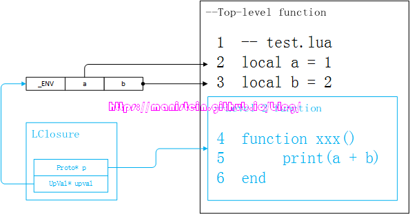
图2如图2所示，xxx函数的LClosure，包含两个主要的部分，一个是proto部分，还有一个是upvalue部分，xxx函数，就是整个函数编译的结果，upvalue列表指向了外层函数的变量a和b。现在，我们还没法直观感受到，xxx函数，在虚拟机层面，如何引用到自己的upvalue，还是通过上面的例子来感知一下，当xxx函数完成编译后，虚拟机指令会存在proto结构的code列表中，我们可以通过图3来表示：
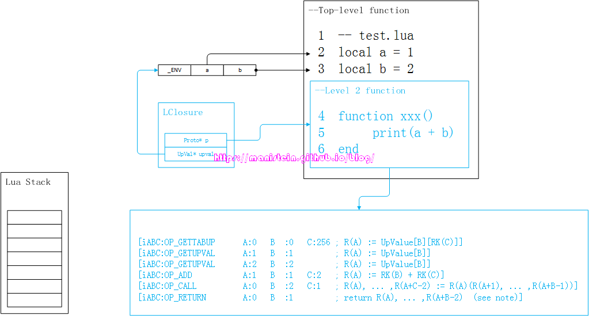
图3我们现在通过执行列表中的指令，来感受一下，xxx函数是如何使用自己的upvalue的。先看第一步：
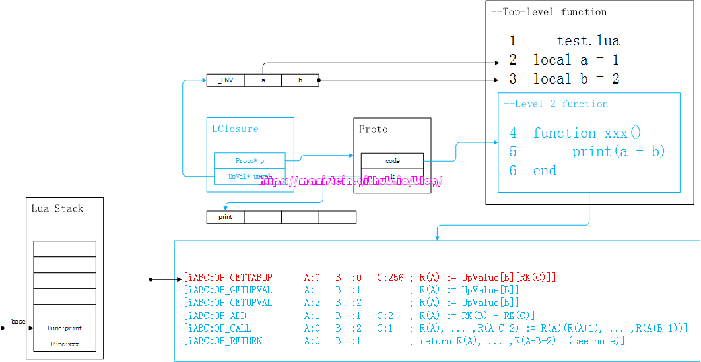
图4此时执行的指令是使用红色标记的指令，它实际表达的含义，可以归纳为：
1 | R(A) := UpValue[B][RK( C )] |
这里的UpValue的含义，就是LClosure实例中，upval列表。B代表，取UpValue列表里的哪个值，RK[C]的含义，之前的章节也有提到过，当C的值<256的时候，它需要到栈上查找。当C的值>=256的时候，它直接到Proto结构变量，k中查找，取出k[C-256]的变量，在本例中是k[0]。而此时，代表我们寄存器的值R(A)中，A的值为0，这代表了，我们要将k[0]，要存储的位置，R(A)的位置，就是base+A的位置，因为A为0，因此，存放目标位置，就是base所指向的位置。于是，我们的推导就变成了：
1 | R(A) := UpValue[B][RK[C]] |
任何一个lua函数，都至少有一个upvalue，而这个upvalue就是以_ENV为upvalue名称的table，它默认指向了_G。接下来，虚拟机就执行第二和第三个步骤，它直接将UpValue[1]和UpValue[2]的值（分别是top-level函数中，变量a和变量b），分别赋值到了base+1，和base+2的位置上，于是我们得到了图5的结果：
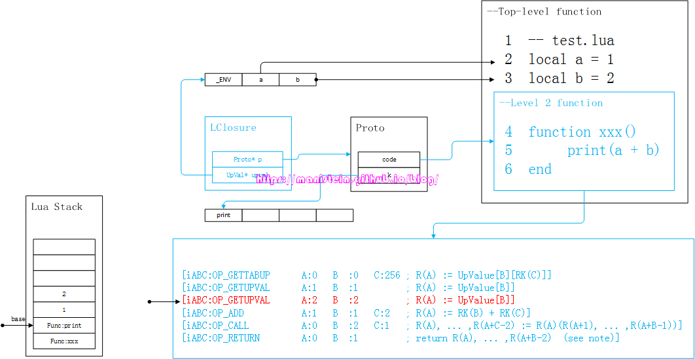
图5接下来执行OP_ADD指令，得到图6的结果：
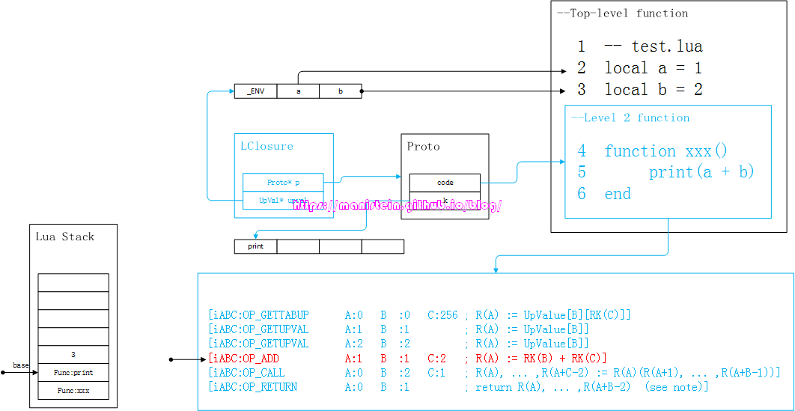
图6最后就是执行OP_CALL指令，调用base位置的函数print，最后输出3。
这里稍微用了一点篇幅，来论述xxx函数如何调用upvalue的流程，需要注意的是，xxx函数在完成编译以后，所有的指令都是int型变量，因此指令是不可能带有任何非数值类型的信息的，因此，虚拟机只能根据不同的指令，去到不同的位置（常量表k、upvalue表等）根据指令中的数值信息，去里面找到对应的值。这也是为什么，我们的proto结构，需要一个code列表去存储指令信息，用一个k列表去存储常量，lua closure实例，需要有一个upval列表去存储upvalue，目的是在虚拟机运行的过程中，虚拟机随时可以根据指令中包含的索引，到这些列表中，找到他们的值，最后再进行逻辑处理。如果读者需要了解整个编译过程，可以回顾第5~第8章的内容。
Upvalue的生成
章节前面的内容，我们已经了解到了upvalue的定义。本节，就是要在概念层面，论述清楚，upvalue是如何生成的。
首个upvalue
每个lua函数，都至少拥有一个upvalue，这个upvalue就是位于第0个位置的那个upvalue，这个upvalue的名称是_ENV，我们现在通过一个例子来观察一下：
1 | -- test.lua |
上面这个例子的upvalue关系图，可以通过图7来展示：
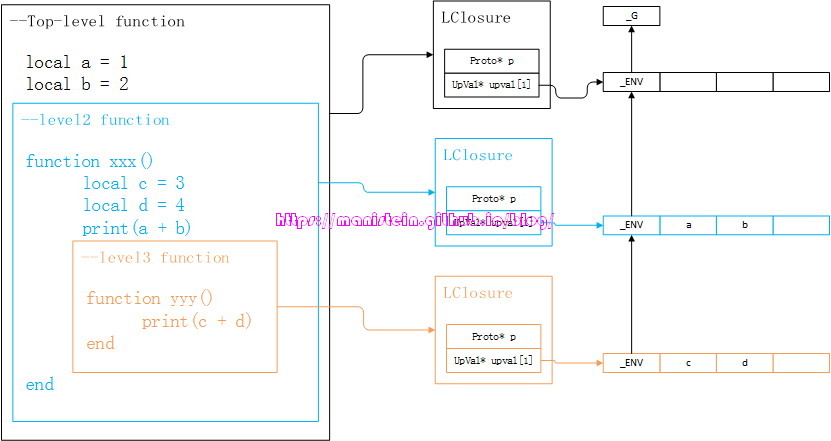
图7我们可以看到，每个lua函数，都有一个upvalue列表，并且他们首个upvalue，都是一个名为_ENV的upvalue，内层lua函数的_ENV指向外层lua函数的_ENV，而最外层的top-level函数，则将值指向了全局表_G。为什么lua要用这种组织方式？将_ENV作为每个lua函数的第0个upvalue呢？我认为，这是为了效率，同时也能是的逻辑更为清晰，lua函数去查找一个变量的方式，如下所示：
- lua函数查找一个变量v，首先会在自己的local变量中查找，如果找到就直接获取它的值，找不到则进入下一步
- 查找upvalue列表，有没有一个名为v的upvalue，有则获取它的值，没有则进入下一步
- 到_ENV里去查找一个名为v的值
在虚拟机运行层面，查找一个变量要简单的多。每个函数，只要在自己lclosure实例中，包含的变量集合（local列表，upvalue列表，_ENV）中查找即可，不需要直接到外层函数去查找，逻辑清晰。我们现在还是以上面的例子为例，yyy函数的逻辑很简单，就是去打印c+d的值，首先yyy函数要获取的是一个名为print的函数，它首先会尝试去查找，是否有一个名为print的local变量，因为没找到，所以去upvalue列表中查找。由于在yyy函数的upvalue列表中，找不到一个名为print的变量，所以就去_ENV[“print”]中查找，因为_ENV默认指向_G所以，从全局表_G中获取了print函数，并压入lua栈中。接下来就是以同样的方式，去获取c和d的值，因为c和d是外层函数xxx的local变量，因此他们被当做upvalue，存在了yyy函数的upvalue列表中了，最后通过print函数，打印了c+d的值。
upvalue生成过程
通过前面的内容，其实我们已经可以了解到，upvalue是什么？它们存放的位置在哪里，以及怎么去获取他们的值。本节的主要任务，就是要搞清楚，upvalue具体是怎么生成的。实际上，查阅了源码后，不难发现，upvalue实际上是在编译时确定（位置信息，和外层函数的关联等），在运行时生成，什么意思呢？意思就是，在编译脚本阶段，就要确定lua函数的upvalue有哪些，在哪里。在虚拟机运行阶段，再去生成对应的upvalue。实际上，用来表示upvalue的有两个数据结构，一个是编译时期，存储upvalue信息的Upvaldesc（这个结构并不存储upvalue的实际值，只是用来标记upvalue的位置信息），还有一个是在运行期，实际存储upvalue值的UpVal结构。它们的结构定义如下所示：
1 | // luaobject.h |
Upvaldesc的每一个字段，都很清晰，也比较容易理解，只是UpVal结构就要复杂得多了，我会慢慢来解释，我相信通过这篇文章，读者能够彻底搞清楚upvalue到底是什么。写到这里，我们不得不回顾一下，Proto的数据结构了：
1 | // luaobject.h |
由于前面章节，已经详细介绍过Proto的结构了，之类不再赘述，本章只关注Proto和Upvalue之间的关系。我们都知道，lua脚本的编译信息，会被存储到Proto结构实例之中，当一个lua函数的某个变量，不是local变量时，我们希望获取它的值，实际上就是要查找这个变量的位置，如果local列表中找不到，则进入到如下流程：
- 到自己的upvaldesc列表中，根据变量名查找，是否存在某个upvalue存在，如果存在则使用它，否则进入下一步
- 到外层函数，查找local变量，如果找到，那么将它作为自己的upvalue，否则查找它的upvaldesc表，找到就将其生成为自己的upvalue，否则进入外层函数，重复这一步
- 如果一直到top-level函数都找不到，那么表示这个upvalue不存在，此时需要去_ENV中查找
这里，我们需要通过一个例子，来理解这个流程，需要注意的是，这个过程，是在lua脚本的编译阶段进行的：
1 | -- test.lua |
上面这个例子，我们可以通过图8来展示：
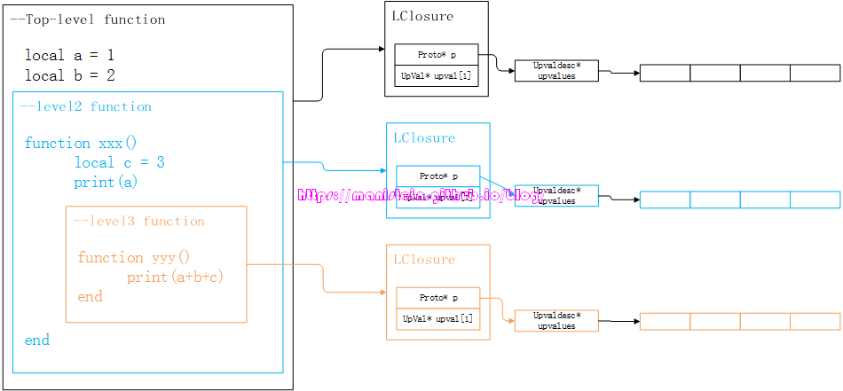
图8当我们的解释器，对这个脚本进行编译时，首先会从top-level function开始。本章我们只关注upvalue的编译流程和结果，所以中间会略过大量的细节。在top-level function中，变量a和b均是它的local变量。按照它们定义的顺序，在虚拟机运行期间，a会在栈中第0个位置，而b则在第1个位置。对脚本的编译开始之后，编译器首先会对top-level函数，会往自己的upvaldesc列表的第0个位置，填充_ENV的信息，得到图9的结果：
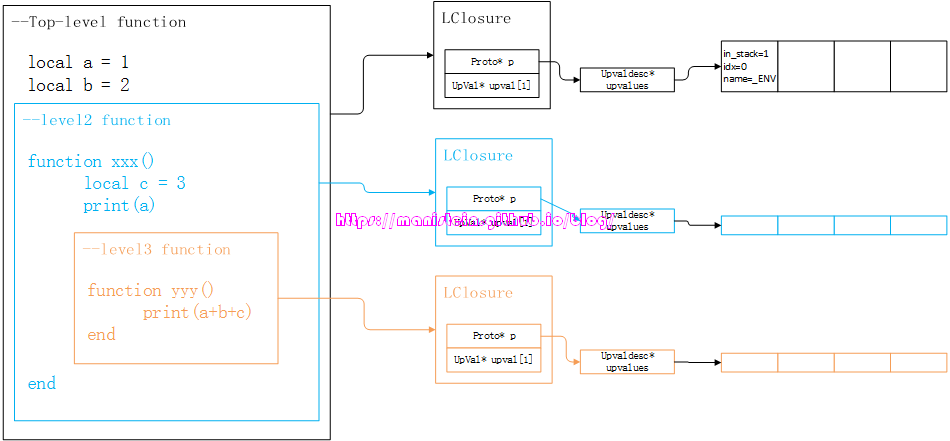
图9我们可以观察到，top-level函数的第一个upvalue信息，已经被填充了，这里可以观察到，in_stack的值为1，idx的值为0，name为_ENV，由于top-level函数，已经是最外层的函数了，因此它没有外层函数，因此这里可以忽略掉in_stack和idx所表示的值，编译器会在脚本完成编译时，将_G赋值到UpVal[0]的位置，这个后面会论述。接下来，则会对xxx函数进行编译，在xxx函数中，c是它的local变量，因此变量c将在xxx函数栈中的第0个位置。我们也可以观察到，xxx函数引用了外层函数的一个变量a，编译器首先会为xxx函数，填充第0个upvalue的编译信息，然后再生成它的第1个upvalue a的信息，得到图10的结果：
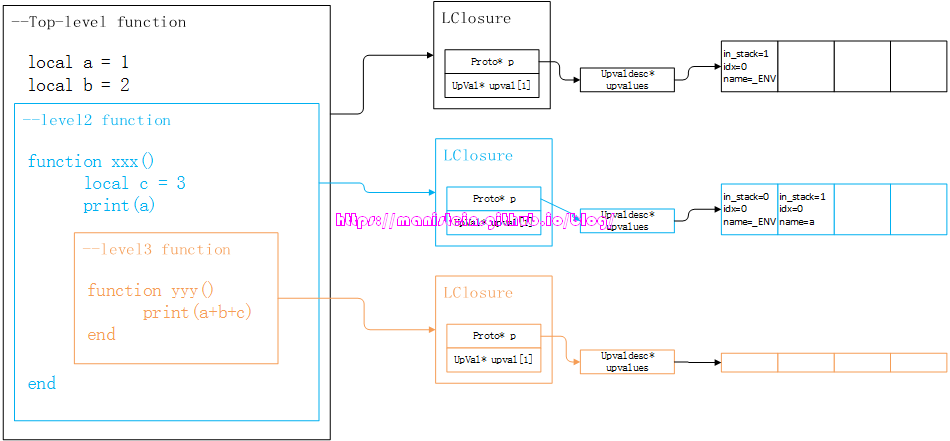
图10我们可以观察一下，xxx函数的upvalue描述信息，第0个仍然是_ENV，它的in_stack的值为0，表示它引用的是外层函数的upvalue值，idx为0，表示该值位于lclosure->upval[0]的位置，name为_ENV表示它的名称是_ENV。它的第1个upvalue的信息中，in_stack的值为1，表示，这个upvalue的值，在外层函数的栈上，idx为0，表示upvalue的值是外层函数栈上，第0个位置的值，在这里指代外层函数local变量a的值1，name的值为a，表示它引用外层函数的变量名为a。再往下，就开始编译函数yyy了。由于在yyy函数内，a、b和c的值，均不是它的local变量，因此这里触发生成upvalue的逻辑。
yyy函数首先要处理的变量是a，由于a不是它的local变量，所以去它的upvaluedesc列表中查找，由于upvaluedesc列表中，没有名为a的upvalue，因此要去外层函数找，在开始找之前，它会将_ENV的信息，填写到upvaluedesc列表的第0个位置上。接下来，yyy函数，会去它的外层函数xxx中，查找名为a的local变量，很显然xxx没有定义名为a的local变量，所以它就去xxx的upvalue列表里查找，最后它在第1个upvalue那里找到这个值，于是得到图11的结果：
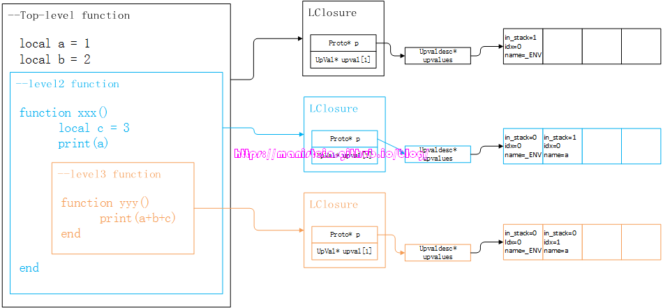
图11我们可以看到，yyy函数生成_ENV的upvalue的方式，和xxx函数是一致的，因此这里不再赘述，而生成upvalue a，则在外层函数xxx的upvaluedesc列表中找到了，因此这个变量不在栈上，所以in_stack=0，并且idx=1（a在xxx函数upvaluedesc列表上的位置）。接下来，则进入到了，生成upvalue b的流程之中了。同样的，yyy函数内部没有定义过变量b，所以要到外层函数xxx中查找，因为xxx没有定义b这个变量，自己的upvaluedesc列表中也没有，所以，此时要到xxx函数的外层函数去查找，并且在top-level函数中，找到了一个local变量b，此时xxx函数首先要将其生成为自己的upvalue，于是得到图12的结果：
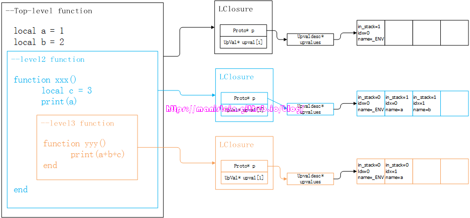
图12name为b，in_stack=1，表示upvalue b，在top-level函数的栈上，前面也说过了，在运行阶段，变量b会在top-level函数栈上的第1个位置（第0个位置是a），所以idx的值，此时为1。接下来，轮到yyy去生成这个upvalue了，因为upvalue b，位于xxx函数，upvaluedesc列表中的第2个位置，因此，它得到如图13的结果：
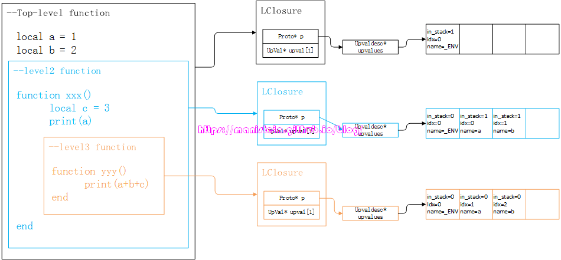
图13这个生成过程，需要读者自己再去梳理领会一下。接下来，就到了upvalue c的生成流程了，首先yyy函数内找不到c的定义，因此去yyy函数的外层函数，xxx函数中查找，xxx函数中，真的有一个变量名为c的local变量，因此，直接生成图14的结果：
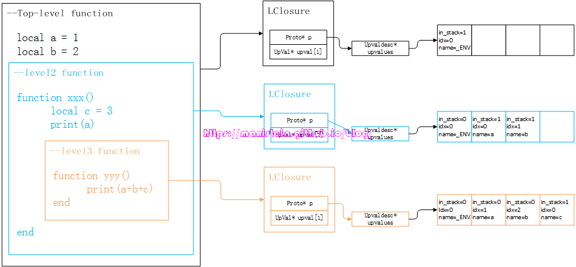
图14因为c是xxx函数的第1个local变量，因此在运行阶段，它在xxx函数栈上的第0个位置，所以，upvalue c在yyy函数upvaluedesc列表中的值为，in_stack=1（它是外层函数的一个局部变量），idx=0（在外层函数栈上的第0个位置），名称name为c。当编译器完成这个脚本的编译时，会给top-level函数的第0个upvalue赋值_G，得到图15的结果：
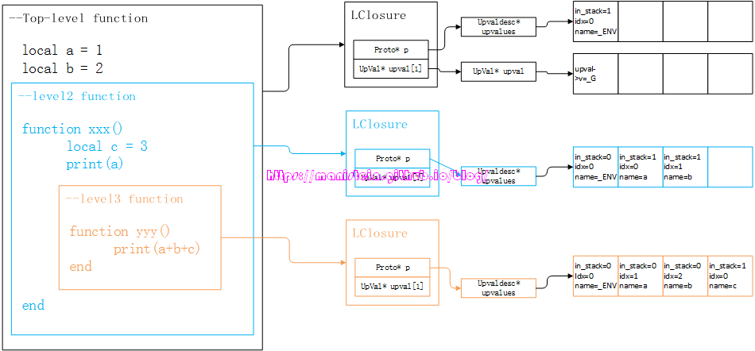
图15前面的论述，主要在集中论述脚本编译期间，upvalue的位置信息生成。现在我们来在概念层面，观察一下，运行期间如何生成虚拟机运行过程中，真实被用到的upvalue值。还是用上面的例子，假设前面的top-level函数开始执行，首先会执行两个赋值操作，于是得到图16的结果：
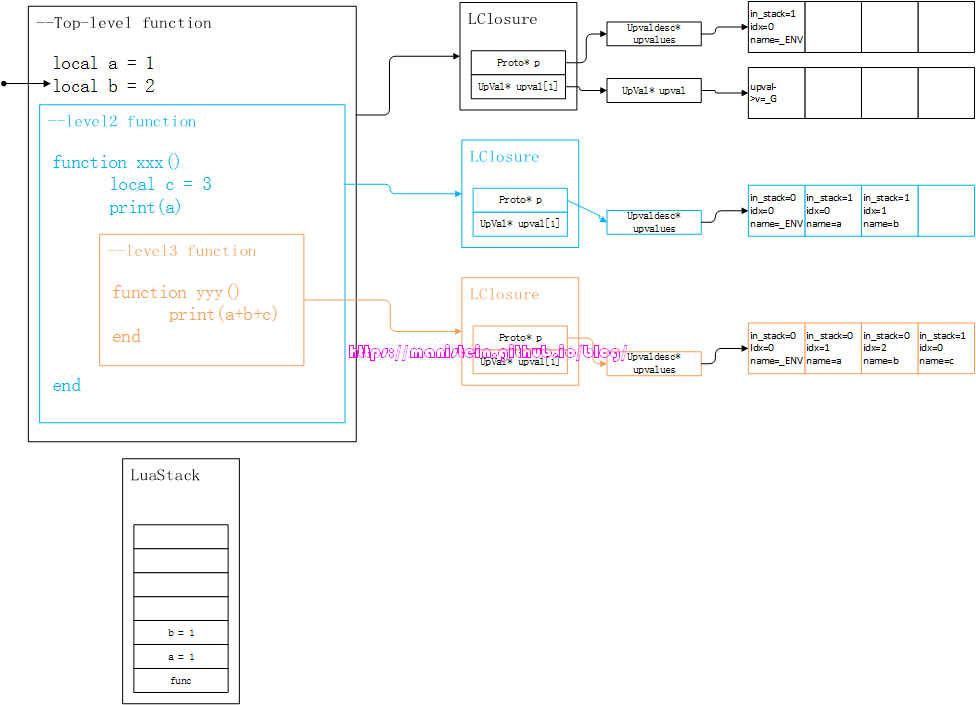
图16两个local变量的定义和初始化操作，虚拟机会将它们放入栈中，接下来往下执行，我们前面也提到过，在lua中，函数是first-class类型，因此它本身也是一种变量类型，所以前面的例子，其实质等价于如下形式：
1 | -- test.lua |
所以逻辑接着往下执行，是对一个名为xxx的变量，赋值一个函数变量。要完成这个操作，首先要创建一个函数实例，并填充它的upvalue值信息，最后再赋值给变量xxx，于是得到图17的结果：
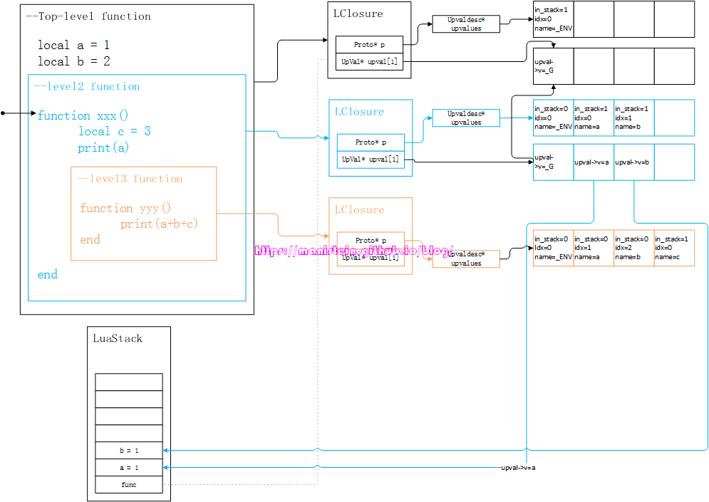
图17我们可以看到，此时，已经开始往xxx函数的upval列表填充信息了，首先它的第一个变量是_ENV，这里不包含任何upvalue名称，而是直接将upval的指针，指向了外层函数的第一个upval。回顾一下图7，他们实际上是同一个UpVal* 实例。接下来，它会创建一个UpVal实例，并且upval->v指向了外层函数的local变量a，然后是local变量b。执行到这里，这个逻辑流程就结束了。可能有读者会问，那yyy函数没做处理吗？答案是是的，因为我们没有调用xxx函数，因此yyy变量的赋值操作，也就不会进行，并且该LClosure实例也不会被创建，xxx函数会被创建，是因为它是在top-level函数里定义的，大家可以回顾一下上面替换成等式的例子。如果，我们在top-level函数里，调用xxx函数，那么，xxx函数里的逻辑也会被创建，yyy函数被创建的逻辑，也会被执行到，于是得到图18的结果。
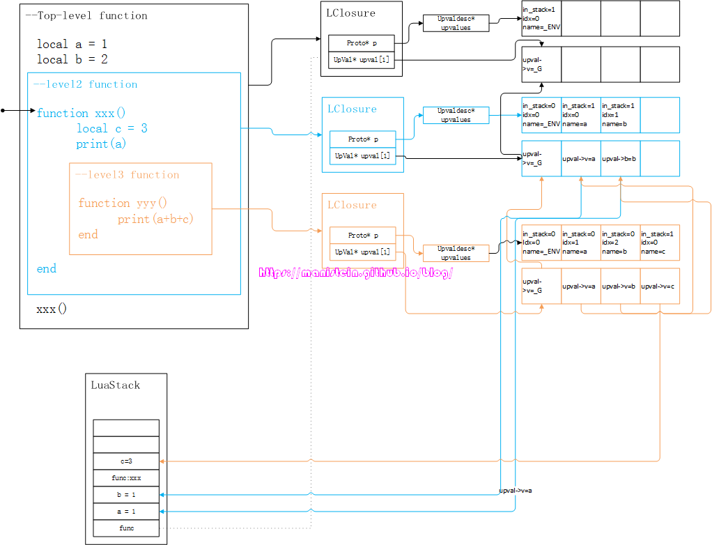
图18xxx函数被调时，它会被压入栈中，同时局部变量也会被压入栈中。这里有一个非常有意思的现象，就是一个函数的upvalue，一直溯源下去，最终的源头，要么是某个外层函数的local变量，要么就是最外层函数的_ENV。
本节，我精心挑选了一个例子，基本把upvalue生成的几种情况都涵盖到了。这里需要注意的是，上面示例图里的LClosure图集，只是为了展示一个关系层次，并不是在编译阶段，就会创建LClosure实例，编译阶段，只会生成Proto实例，并将编译结果存到这个结构中。只有执行脚本逻辑阶段，才会将LClosure实例创建。
Open Upvalue和Closed Upvalue
我们已经完成了upvalue生成流程的讨论了，现在来关注一下open upvalue和closed upvalue。可能很多读者，对这两个概念非常陌生，但是理解它，对于解释一些和upvalue有关的现象，是非常有帮助的。open upvalue和closed upvalue这两个概念，是针对一个函数的upvalue是外层函数local变量的情况。关于upvalue的使用，最难理解的也是这个部分。接下来，我将通过两个例子来说明这个概念，先看例1：
1 | local var1 = 1 |
例1
例1的输出结果如下所示：
1 | bbb: 2 2 |
这个例子中，函数bbb和函数ccc是在aaa里定义的，也就是说，只有调用执行了函数aaa，bbb和ccc两个函数才会被创建。我们现在来看一下，执行这段脚本时的情况，图19是该脚本完成编译时的状态：
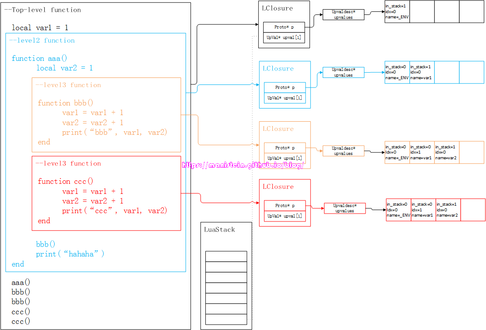
图19这里的upvalue生成，前面已经花费了相当篇幅去论述了，因此这里留给读者自己去推导，这里不再赘述。接下来，我们就进入到了执行环节，先从top-level函数的第一行代码开始，于是得到图20的结果：
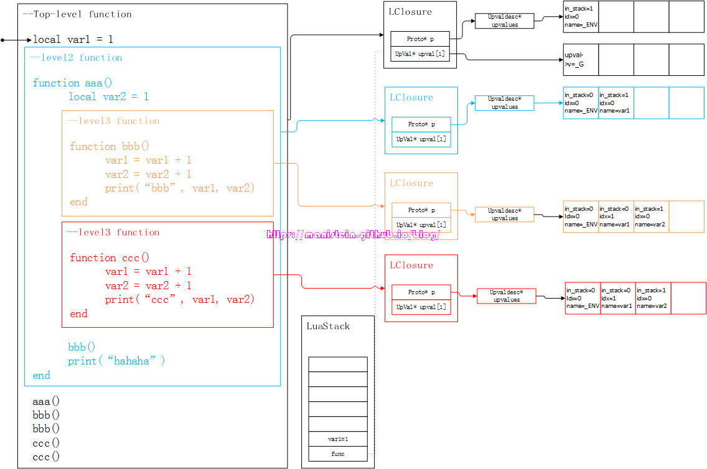
图20接下来，就进入到了，创建函数aaa的流程，得到图21的结果：
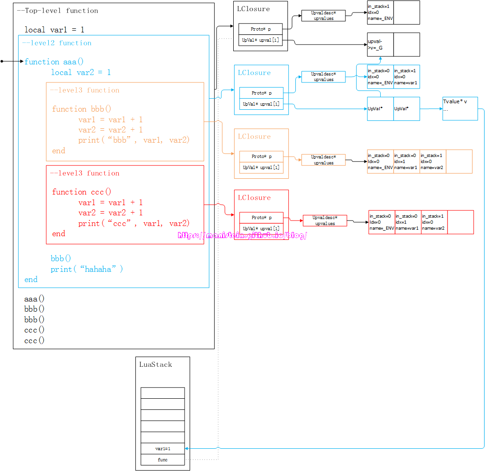
图21创建函数aaa，的时期，并不会执行函数aaa内的逻辑，但是会为其创建一个函数实例，并且完成UpVal列表的填充。接下来，就会执行函数aaa()，得到图22的结果：
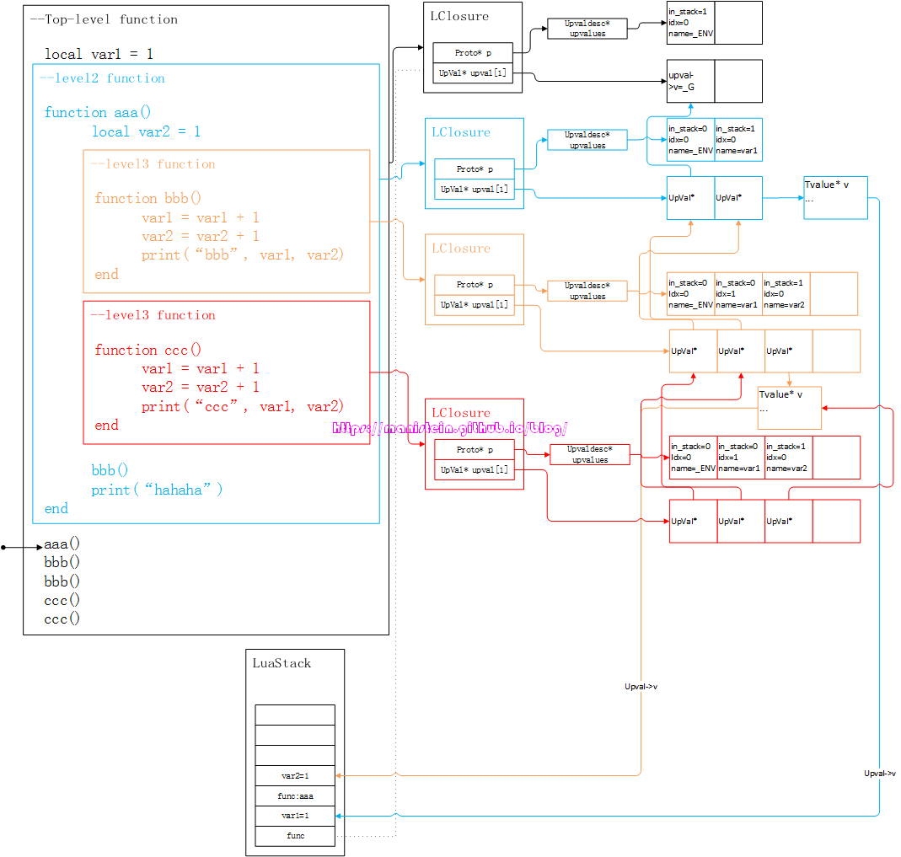
图22这里我们可以看到，执行aaa函数之后，它的内部逻辑会创建函数bbb和函数ccc（创建LClosure实例），并且初始化它们的upvalue列表。这里需要注意的是，函数bbb和函数ccc的第2个（var2 upvalue）UpVal 指针指向了同一个UpVal 实例。图22中所示的，包含的值，指向LuaStack中的两个Upvalue，此时是Open Upvalue。当我们的逻辑继续往下走，执行到调用第一个bbb函数的时候，此时结果如图23所示：
图23
此时，aaa函数已经执行完毕，因此它的局部变量需要从栈中清退，而在执行aaa函数的过程中，已经将函数对象（LClosure实例），bbb和ccc创建，他们的var2变量，共享同一个UpVal实例。在aaa函数执行完毕时，他们的UpVal实例，会进行close操作，什么意思呢，就是原来的upval->v指向栈的某个位置，现在这个关联将被破除，并且upval->v的值，赋值为upval->u.value的地址，同时，upval->v原来指向的值，会被赋值到upval->u.value上。为什么此时，填入upval->u.value内的值是2呢？因为aaa函数内调用了一次bbb函数，因此，此时我们的控制台会输出如下结果：
1 | bbb: 2 2 |
而接下来，要执行的函数，就是图23中，黑色箭头所指的函数调用，此时调用的函数是bbb函数。这个函数，会分别将var1和var2的值加1，最后再打印他们，我们可以看到，var1仍然在栈上，因此var1的值会变成3，而var2的值，指向了一个UpVal* 实例，而其原来的值是2，自增1后，就变成了3，此时得到的输出结果为：
1 | bbb: 2 2 |
而与结果相对应的图，如图24所示：
图24
接下来，执行第二个bbb函数的调用，var1的值仍然在栈上，var2的值，仍然在那个UpVal*实例里，于是得到如下的结果：
1 | bbb: 2 2 |
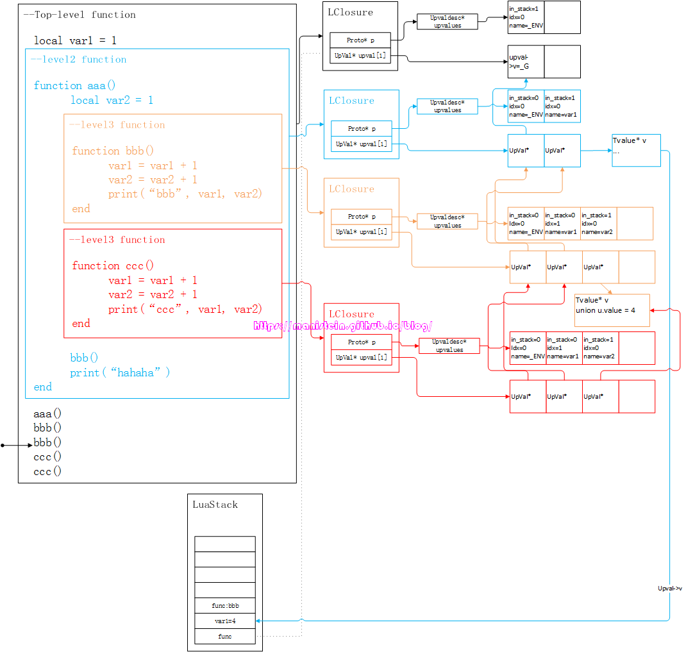
图25接下来，则是执行第一个ccc函数，通过观察ccc函数的upvalue列表，我们可以看到，不论是var1还是var2，他们引用的都是同一个UpVal*实例，因此bbb函数的执行结果，会影响到ccc。第一个ccc函数执行完以后，得到如下的结果：
1 | bbb: 2 2 |
执行完第二个ccc函数得到的结果，则如下所示：
1 | bbb: 2 2 |
到现在为止，我就完成了例1的论述了，读者通过这个例子，可以理解到，在运行阶段，不同的函数，引用到了同一个Upvalue，那他们upvalue列表里对应的实例，实际上是共享的。读者可以通过多次阅读上面的例子，来感受一下open upvalue变为closed upvalue的流程。接下来，我们要看的是例2。
例1展示的是，两个同级函数，引用了同一个外层函数local变量，并且经历从open upvalue到closed upvalue转变的流程。我们现在要看的是第二个例子：
1 | local var1 = 1 |
例2
现在我们通过图文的方式，来展现这个逻辑流程，首先执行脚本的第一行逻辑，得到图26的结果：
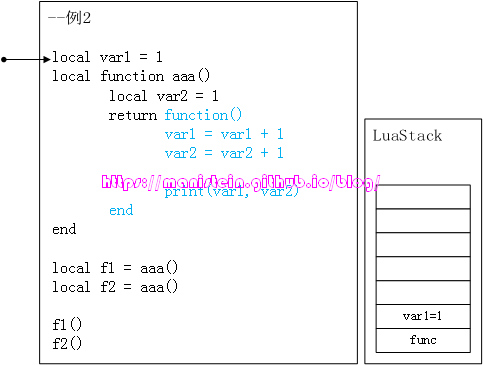
图26接下来，就会执行函数aaa的创建逻辑，此时我们会创建一个LClosure实例，并存放在local变量aaa中，得到图27的结果：
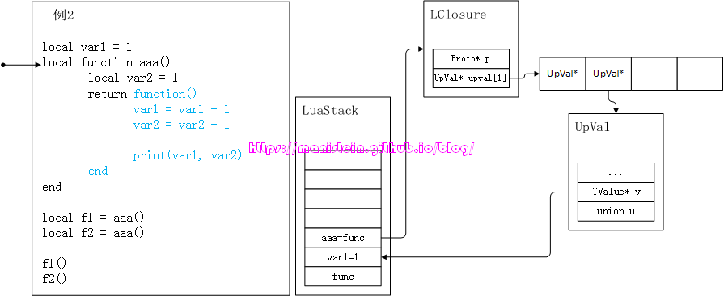
图27程序执行流继续往下走，开始执行local f1 = aaa()函数的逻辑了。首先程序要进入到aaa函数的内部，执行它的逻辑，先来看一下执行了第一个赋值操作之后的结果：
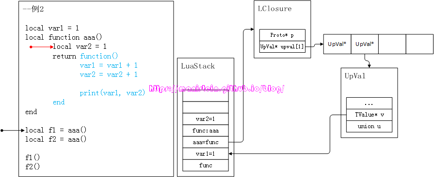
图28接下来，aaa函数，会往下执行逻辑，它会创建一个匿名的function实例（LClosure实例），得到图29结果：
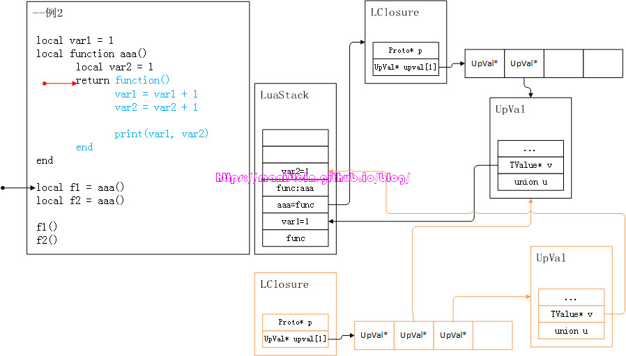
图29我们可以看到，橙色线框的部分，就是被创建出来的匿名函数实例，此时，aaa函数要结束了，因此aaa函数的栈信息会被清退，此时匿名函数中的var2，引用的是外层函数aaa的local变量，在aaa函数完成调用之前，它是open upvalue，而aaa函数结束时，它要转变成closed upvalue，于是得到图30的结果：
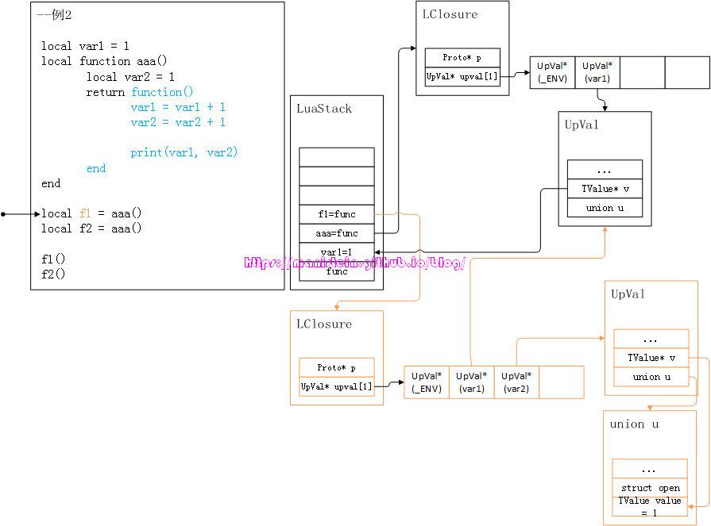
图30我们可以看到，var2的upvalue中，upval->v指针，从之前指向栈上，专向了指向自身的结构之中，并且将原来栈上的值，赋值给了它。与此同时，局部变量f1也被压入栈中，它的值，就是从aaa函数中创建并返回的函数实例（LClosure实例）。接下来，黑色箭头会继续往下走，此时会重复上面的逻辑，于是得到图31的结果：
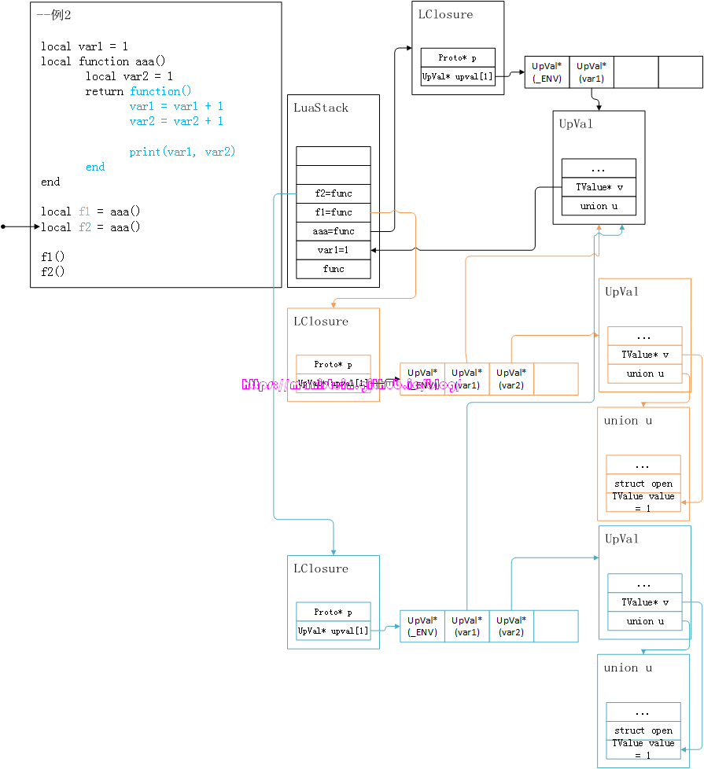
图31我们可以观察到，aaa函数，又重新创建了一个新的函数实例，并且赋值到local变量f2中，f1和f2的var1 upvalue，引用了同一个UpVal实例，而var2这个upvalue，则是每个都独立一份，这里需要和例1的情况进行区别，例1的upvalue var2是共享的，因为调用aaa函数时，在同一次调用时创建的，而例2的情况则是，分两次调用创建，因此UpVal实例是各自独立一份。接下来，例2的代码会继续往下执行，分别执行了f1和f2两个函数，于是得到如下的输出。
1 | 2 2 |
因为var1是共享的，所以f2执行的时候，输出3，但是var2是f1和f2各自独立有一个UpVal*实例的，因此，f1和f2调用的结果都是2。
结束语
到这里，我就完成了整个upvalue的论述了，后面还有几个重要章节，它们分别是weektable、coroutine和require机制，我将在接下来的几个月内完成这个系列。
Reference
[1] Programming in Lua 27.3.3 - Upvalues
[2] Programming in Lua 1.1 - Chunks